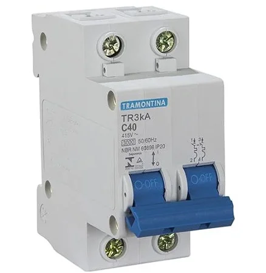

Dispositivo de proteção elétrica fundamental para segurança de circuitos
O disjuntor é um dispositivo de proteção elétrica usado para interromper automaticamente a passagem de corrente quando ocorre uma situação anormal, como sobrecarga ou curto-circuito.
✓ Proteção de circuitos de iluminação
✓ Proteção de tomadas e eletrodomésticos
✓ Distribuição segura da energia elétrica
✓ Proteção de equipamentos eletrônicos
✓ Segurança de sistemas de iluminação
✓ Proteção de ar-condicionado
✓ Proteção de motores elétricos
✓ Sistemas de automação industrial
✓ Segurança em ambientes críticos

Os disjuntores oferecem proteção confiável, rápida resposta a falhas, reutilização após disparo e conformidade com normas de segurança elétrica. Eles são essenciais em qualquer instalação elétrica moderna.